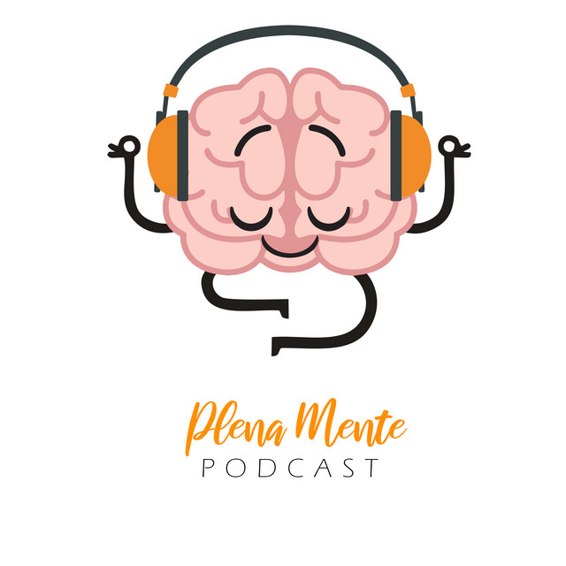

Podcasts
Podcasts que podem servir como uma forma de apoio
a pessoas com transtorno de ansiedade.

Plena Mente
Este podcast foca na prática da atenção plena (mindfulness)
como uma ferramenta eficaz para lidar com a ansiedade generalizada.
Os episódios incluem meditações guiadas, exercícios de respiração e
conversas com especialistas sobre a importância do autocuidado emocional.
